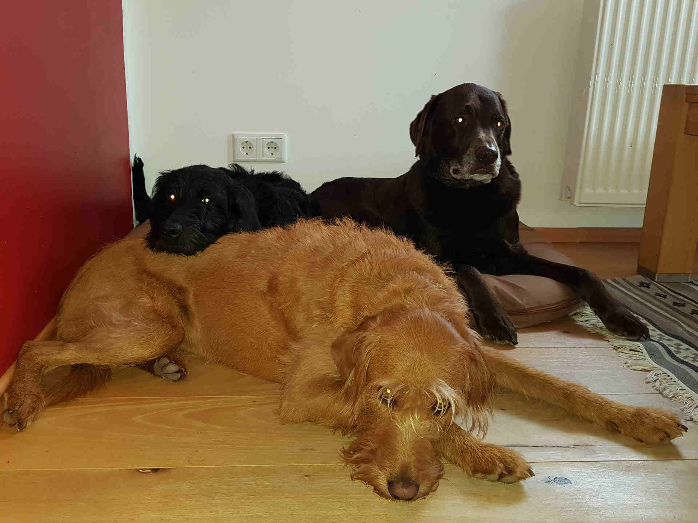

Mein Name ist Steffi Kostka und außer den Hunden wohnen im
Haushalt noch mein Mann Hans und die drei Kinder Johanna (
Mein Name ist Steffi Kostka und außer den Hunden wohnen im
Haushalt noch mein Mann Hans und die drei Kinder Johanna (Hundebegegnungen für Senioren, Kinder und Menschen mit Behinderung.
In Einzel- und Gruppensitzungen.

Hund Scotti ist ein Labradoodle, eine Mischung aus Labrador und Großpudel, geboren am 26.04.2013 in Niederlauterbach in der Hallertau. Er wiegt 30 kg.
Scottis Lieblingsbeschäftigungen sind schlafen, gekrault werden, fressen und spielen mit seinen Hundefreunden.
Emma ist am 29.06.2016 geboren und ebenfalls ein Labradoodle, allerdings hat sie ein apricotfarbenes Fell und wiegt nur 19 kg.
Emmas Lieblingsbeschäftigungen sind Scotti zu ärgern und gestreichelt werden.
Nelly ist am 31.07.2019 geboren und hat schwarzes wuscheliges Fell.
Ihre Mutter ist eine braune Labradorhündin und ihr Vater ein schwarzer Großpudel. Sie wiegt zur Zeit 18 kg. Nellys Lieblingsbeschäftigungen sind schmusen und ballspielen.
Mein Name ist Steffi Kostka und außer den Hunden wohnen im
Haushalt noch mein Mann Hans und die drei Kinder Johanna (
Für jeden Besuch versuche ich neue kleine Aufgaben an die Personen zu stellen, welche gerade in der Gruppe bzw. in den Gemeinschaftsräumen gut zu erfüllen sind. Die Personen sollen ganzheitlich aktiviert werden.
In Einzelsitzungen können ganz persönliche Aktionen mit den betreffenden Personen stattfinden - vom einfachen Anstupsen bis zu engem Körperkontakt. Durch diese Nähe und Wärme werden viele Sinne angesprochen und aktiviert.
Wenn die betreffende Person dazu in der Lage ist, können zum Beispiel auch Kunststückchen selbständig beigebracht werden.
Man sieht also, dass die Ansprüche über das bloße Streicheln hinausgehen – obwohl das auch ein sehr wichtiger und nicht zu unterschätzender Faktor in der Mensch-Hund-Begegnung ist. Der Hund ist in der Arbeit ein anderes Mittel, um die Menschen zu erreichen – im Mittelpunkt der Arbeit steht aber immer die Person mit ihren Bedürfnissen.
Die zentralen Ziele der Arbeit mit dem Hund sind:
Die Hunde sind absolut gesund, haben alle wichtigen Impfungen, werden regelmäßig entwurmt und bekommen eine Floh- und Zeckenprophylaxe. Scotti ist seit er 8 Wochen alt war bei mir, Emma seit sie 10 Wochen alt ist und Nelly seit sie 17 Wochen alt ist.
Scotti hat die Begleithundprüfung im Oktober 2014 erfolgreich bestanden.
Emma hat die Begleithundprüfung und den Hundeführerschein im Juli 2017 erfolgreich bestanden.
Nelly ist momentan noch in Ausbildung. Ab September 2020 - nach erfolgreicher Begleithundprüfung - wird sie das Team unterstützen.
Mit allen Hunden besuchen wir die Blinden- und Therapiehundschule Socius.
Auch wenn meine Hunde absolut lieb sind und eher flüchten würden als zu beißen, so sind sie doch Tiere und deren Verhalten kann man nie zu 100 % vorhersagen. Daher sind sie haftpflichtversichert, d.h. Schäden die entstehen können, sind abgedeckt.
Da die Hunde völlig gesund sind und ich regelmäßig Prophylaxe betreibe, wird das gesundheitliche Risiko für die Personen minimiert.
Gerne können wir einen Termin zu einer kostenlosen Probestunde vereinbaren.
Einige Beispiele von der Arbeit mit Scotti, Emma und Nelly.